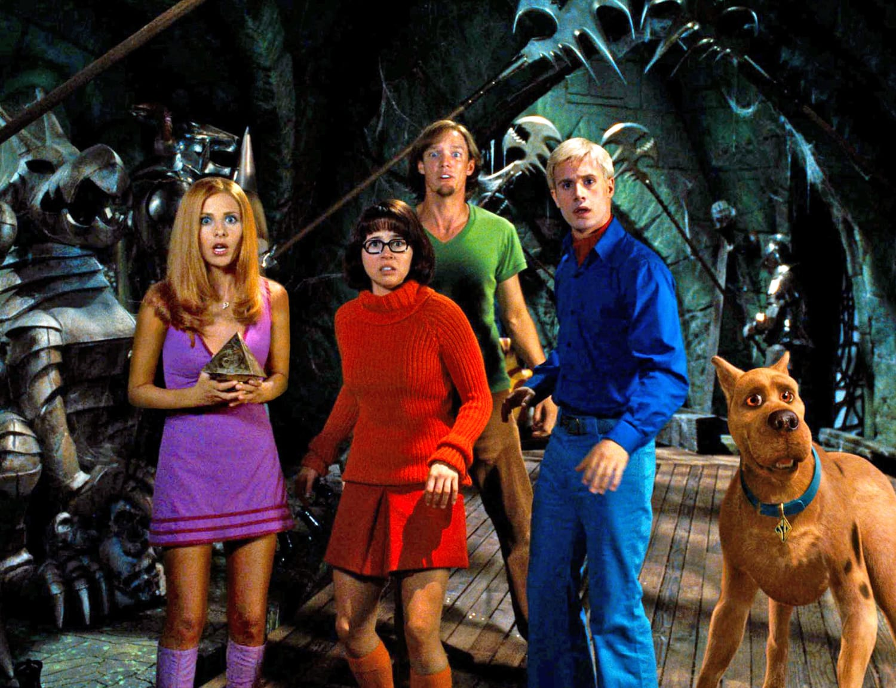

Scooby-Doo: The Live-Action Trilogy (2002-2004)
The early 2000s brought Scooby-Doo and the Mystery Inc. gang to the big screen with a live-action adaptation. Directed by Raja Gosnell and produced by Warner Bros., the films starred Freddie Prinze Jr. (Fred), Sarah Michelle Gellar (Daphne), Matthew Lillard (Shaggy), Linda Cardellini (Velma), and Neil Fanning as the voice of Scooby-Doo. These movies combined CGI animation with live-action performances, bringing the beloved characters to life.
Scooby-Doo (2002)
In the first film, the Mystery Inc. gang reunites after a two-year breakup to investigate strange happenings at Spooky Island, an amusement park owned by Emile Mondavarious. As they uncover the mystery, they find that real monsters may be involved. Despite mixed critical reviews, the movie was a box office success and introduced Scooby-Doo to a new generation.
Scooby-Doo 2: Monsters Unleashed (2004)
The sequel follows the gang as they try to unmask a new villain who has brought to life classic monsters from their past cases, including the Black Knight Ghost, 10,000 Volt Ghost, and Pterodactyl Ghost. The movie dives deeper into the team’s dynamics and personal struggles. Although it didn’t perform as well as its predecessor, it remains a fan-favorite.
Behind the Scenes
The making of the live-action Scooby-Doo movies was a true feat of creativity and technology. From combining live-action performances with CGI animation to crafting the iconic look of the characters, the films pushed the boundaries of what was possible at the time. Behind-the-scenes footage reveals the intricate work that went into bringing Scooby-Doo and the Mystery Inc. gang to life. The cast worked closely with special effects teams to create realistic scenes involving Scooby and other animated characters. Interviews with the cast also highlight their experiences on set, the challenges of acting alongside a CGI character, and their dedication to staying true to the beloved animated series. These insights give fans a deeper appreciation for the hard work and passion that went into making these films a reality.
Notable Cameos
In addition to the main cast, the Scooby-Doo films were packed with exciting cameos from well-known personalities. Several actors, musicians, and even pop culture icons made brief but memorable appearances in the films. From famous actors playing quirky villains to musicians making surprise appearances, the cameos added an extra layer of fun for eagle-eyed viewers. Fans of the original Scooby-Doo series were also treated to classic villains making their live-action debut, with characters like the Creeper and the Black Knight Ghost coming to life in a whole new way. These cameos not only provided comedic relief but also gave longtime fans of the franchise some special moments to enjoy on screen.